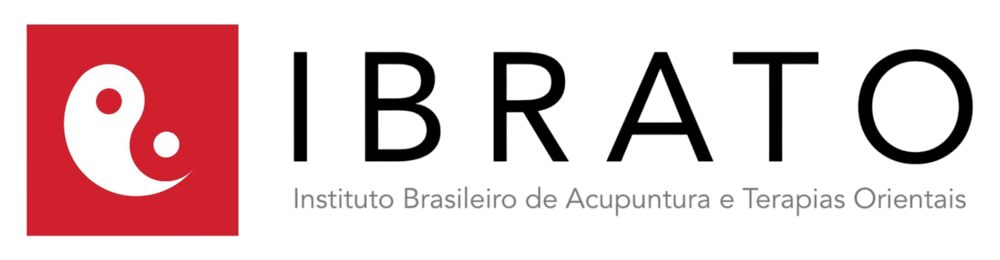

100% online
Ensino 100% online com acesso à plataforma exclusiva, acompanhamento contínuo e flexibilidade para estudar no seu ritmo.
Aprenda acupuntura com quem é referência. Formação completa e mentoria exclusiva com o Dr. Fabrício Costa.

Fisioterapeutas, psicólogos, enfermeiros e terapeutas que hoje atuam com mais segurança, conhecimento e autonomia.
Ensino 100% online com acesso à plataforma exclusiva, acompanhamento contínuo e flexibilidade para estudar no seu ritmo.
Dezenas de alunos entre fisioterapeutas, psicólogos, enfermeiros e terapeutas formados, atuando com confiança em todo o Brasil.
Você terá orientação de quem realmente vive a acupuntura na prática, com suporte e direcionamento para aplicar o conhecimento com confiança.
Um método exclusivo que combina a sabedoria milenar da acupuntura com protocolos modernos e científicos para resultados excepcionais.
Diagnóstico em menos de 3 minutos e alívio da dor em menos de 60 segundos. O Método Balance Pro é uma técnica de acupuntura focada no equilíbrio dos canais energéticos para promover equilíbrio e alívio imediato da dor e equilíbrio emocional. Ele se destaca por não utilizar diagnósticos tradicionais (língua/pulso), focando na seleção de pontos distantes da área afetada, proporcionando resultados rápidos.
Acupunturistas e terapeutas que querem diagnósticos mais precisos e resultados desde a primeira sessão.
Certificação de 60 horas emitida pelo IBRATO, reconhecida no âmbito da Medicina Tradicional Chinesa.
Mais de 15 anos formando profissionais. Mais de 10 turmas formadas em acupuntura e técnicas terapêuticas da MTC.
Encontros ao vivo e gravados, material didático completo, acesso por 1 ano, suporte contínuo via grupo exclusivo e plataforma do aluno com acesso desde o primeiro dia do curso.
Seja você iniciante ou já atuante na área da saúde, existe uma formação ideal para o seu momento.
Sem experiência prévia? O Curso de Acupuntura em 12 Meses foi desenvolvido para quem está começando do zero, com didática clara e acompanhamento próximo.
Fisioterapeutas, enfermeiros, médicos e outros profissionais que querem agregar a acupuntura como recurso terapêutico em sua prática clínica.
Já atua com acupuntura, mas quer resultados melhores e mais rápidos? A Mentoria Método Balance Pro é para você, aperfeiçoamento com orientação direta do Dr. Fabrício.
Busca uma nova oportunidade com propósito? A acupuntura agora é uma profissão regulamentada no Brasil e isso mudou completamente o mercado.
Você está preparado para aproveitar essa nova fase… ou vai ficar para trás? O mercado da acupuntura está crescendo, mas agora só profissionais qualificados poderão atuar.
Isso significa uma coisa: quem se posicionar agora, sai na frente.
A formação em Acupuntura é o primeiro passo para conquistar uma nova carreira ou se especializar em uma área que cresce cada vez mais no Brasil. Muitos profissionais vivem anos estagnados, sem valorização ou sem novas oportunidades… enquanto o mercado de terapias integrativas segue em expansão e precisando de profissionais qualificados.
Do iniciante ao profissional avançado, temos a formação certa para cada momento da sua jornada.
Pós Graduação em Acupuntura e Terapias Integrativas Reconhecida pelo MEC
a partir de
menos de R$ 7 por dia
ou 12x R$ 247
Aprenda a diagnosticar em menos de 3 minutos e gerar alívio da dor em seus pacientes em menos de 60 segundos.
à vista
ou 10x R$ 51,70 sem juros
Um mentor que combina experiência clínica real com didática excepcional.
Formação acadêmica sólida aliada a mais de uma década de prática clínica intensa.
O Método Balance Pro foi testado e validado em centenas de pacientes com resultados excepcionais.
Faça parte de uma rede de profissionais em constante crescimento, com troca de experiências e suporte mútuo.
Diagnóstico em menos de 3 minutos e alívio da dor em menos de 60 segundos. Você aprende a reproduzir isso no seu consultório.